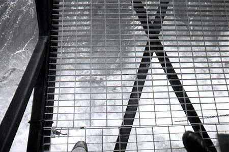
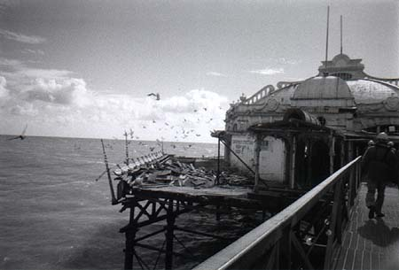
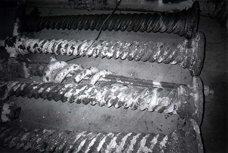
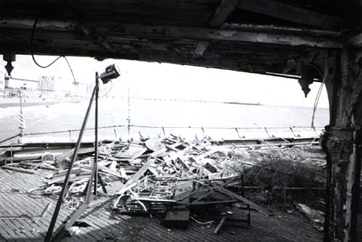

Jeremy Day >> Projects >> Take a promenade along West Pier >>
|
Don't look down!
Correction, a slender metal, completely see-through walkway. My companion suffers from fear of heights, or possibly narrow walkways, I forget. Either way, he's telling me the same damn story about heights/narrow walkways (the dangers thereof) again. |
| Looking along the walkway None of this first half of the Pier is safe; the metal walkway continues into the Ballroom, ahead. That partial collapse of the side there was nothing to worry about, they said; the renovation was at that time concentrating on the hidden depths of the pier, its connection to the sea-bed. |
| The screws that bind The pier was originally anchored to the sea bed with extremely long screws. These are not the screws; they're actually decorative ironwork pillars demonstrating the dilapidation of the ironwork and renovation techniques. |
|
Last breath of sea air
Just outside the ballroom, we stop for a brief lecture before heading inside. The pier is wired for lights (a huge neon sign proclaims "WEST PIE" every evening) but I don't know why those Christmas trees are there. Oh look, isn't that a nice ceiling. |